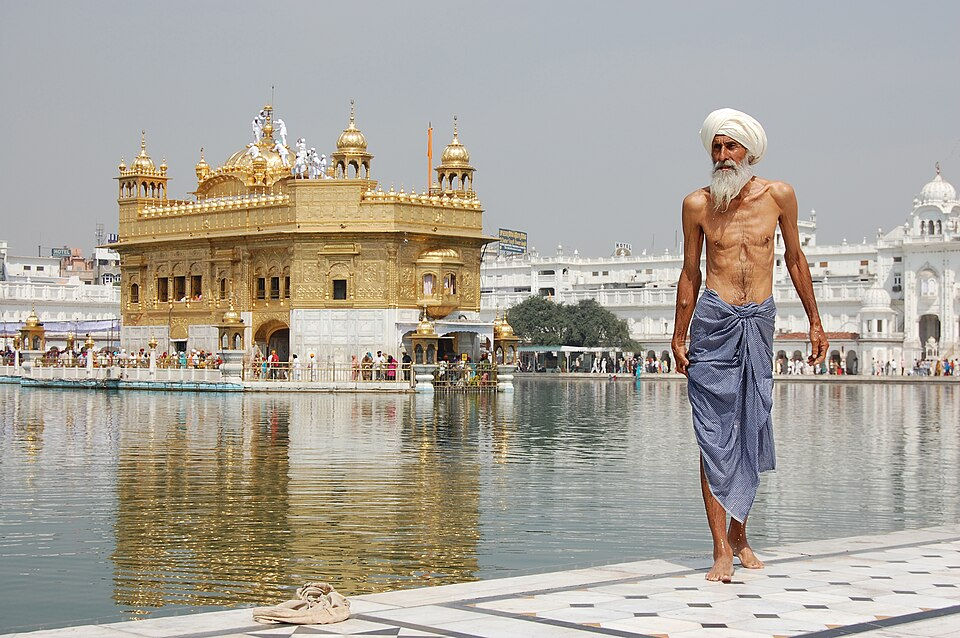

राष्ट्रीय
राष्ट्रीयसुप्रीम कोर्ट के हस्तक्षेप के बाद मदुरै की पहाड़ी पर जलाया गया कार्तिगाई दीपम
सुप्रीम कोर्ट के सख्त निर्देश और तमिलनाडु सरकार की खिंचाई के बाद मदुरै की तिरुपरंकुंड्रम पहाड़ी पर कार्तिगाई दीपम प्रज्वलित किया गया। कोर्ट ने अवमानना नोटिस जारी कर मंदिर बोर्ड को निलंबित कर दिया है।
ताज़ा ख़बरें
द ग्रेट इंडियन कपिल शो में मनोज बाजपेयी ने सुनाया अनुभव सिन्हा का किस्सा
अभिनेता मनोज बाजपेयी 'द ग्रेट इंडियन कपिल शो' के आगामी एपिसोड में नजर आएंगे। शो के प्रोमो में उन्होंने फिल्ममेकर अनुभव सिन्हा से जुड़ा एक मजेदार वाकया साझा किया है।
राष्ट्रीयतमिलनाडु के ITI इंस्ट्रक्टर ने डिजिटल टूल्स और गतिविधियों से बदली पढ़ाई की शैली
तमिलनाडु में वोकेशनल एजुकेशन के अनुभव का उपयोग कर रहे एक इंस्ट्रक्टर ने क्लासरूम में क्विज और डिजिटल टूल्स के जरिए ITI छात्रों के लिए तकनीकी शिक्षा को आसान और दिलचस्प बनाया है।
 राष्ट्रीय
राष्ट्रीयमाहिरा और फ़वाद ख़ान की नई नेटफ़्लिक्स सिरीज़ पर भारत में उठा विवाद
पाकिस्तानी कलाकार फ़वाद ख़ान और माहिरा ख़ान की आने वाली नेटफ़्लिक्स सिरीज़ को भारत में प्रसारित न करने की मांग उठी है, जिससे दोनों कलाकार एक बार फिर चर्चा में हैं।
राष्ट्रीयउत्तराखंड लोक सेवा आयोग ने जारी किया 2026-27 का परीक्षा कैलेंडर
उत्तराखंड लोक सेवा आयोग ने वर्ष 2026-27 के लिए परीक्षाओं का नया कैलेंडर जारी कर दिया है। इसके तहत पीसीएस, आरओ-एआरओ और प्रवक्ता समेत 11 प्रमुख भर्ती परीक्षाओं की तिथियां घोषित की गई हैं।
 राष्ट्रीय
राष्ट्रीयपरिसीमन विधेयक: कांग्रेस के विरोध के बीच सुशील शिंदे ने किया समर्थन
कांग्रेस के विरोध के बीच पूर्व केंद्रीय मंत्री सुशील कुमार शिंदे ने जनसंख्या के आधार पर प्रतिनिधित्व की वकालत करते हुए परिसीमन का समर्थन किया है। हालांकि, उन्होंने केंद्र सरकार के तरीके पर सवाल उठाए हैं।
राष्ट्रीयभविष्य की चिंता छोड़ वर्तमान में जिएं, साहित्य आजतक में बोले पंडित प्रदीप मिश्रा
साहित्य आजतक 2026 के मंच पर कथावाचक पंडित प्रदीप मिश्रा ने कहा कि भविष्य की चिंता और पैसे जोड़ने की होड़ में इंसान को वर्तमान का आनंद नहीं छोड़ना चाहिए। उन्होंने सकारात्मक सोच के साथ जीवन जीने की सलाह दी।
राष्ट्रीयसंसद के विशेष सत्र से पहले इंडिया ब्लॉक ने परिसीमन बिल पर रखीं तीन मांगें
संसद के विशेष सत्र से पहले इंडिया ब्लॉक के नेताओं ने बैठक कर परिसीमन और लोकसभा सीटों में बढ़ोतरी के विरोध का निर्णय लिया। विपक्ष ने मौजूदा सीटों पर महिला आरक्षण लागू करने समेत तीन मांगें रखी हैं।
राष्ट्रीयसोनिया गांधी की नागरिकता को लेकर दिल्ली पुलिस ने कोर्ट में सौंपी स्टेटस रिपोर्ट
दिल्ली पुलिस ने राउज एवेन्यू कोर्ट में दाखिल स्टेटस रिपोर्ट में कहा है कि 1980 में सोनिया गांधी भारतीय नागरिक नहीं थीं, हालांकि तब भी उनका नाम मतदाता सूची में था। गृह मंत्रालय ने इसकी पुष्टि की है। मामले की अगली सुनवाई 14 दिसंबर को होगी।
 व्यापार
व्यापारमहंगाई पर सरकारी रिपोर्ट: त्योहारी सीजन और सप्लाई की दिक्कतों से बढ़ सकते हैं दाम
केंद्र सरकार की मासिक आर्थिक रिपोर्ट में आशंका जताई गई है कि त्योहारी सीजन, शादियों के मौसम और सप्लाई चेन में बाधाओं के चलते खाने-पीने की चीजों के दाम बढ़ सकते हैं.
अंतरराष्ट्रीयअफ़गानिस्तान के कुनार प्रांत में स्कूल के पास जोरदार धमाका, सात की मौत और 90 घायल
अफ़गानिस्तान के कुनार प्रांत में एक स्कूल के पास हुए शक्तिशाली विस्फोट में सात लोगों की मौत हो गई और 90 से अधिक लोग घायल हो गए। शुरुआती जांच के अनुसार धमाका खनन कंपनियों के विस्फोटक गोदाम में हुआ।
राष्ट्रीयNEET UG 2027: परीक्षा में बदलाव की चर्चाओं में समय न गंवाएं, तैयारी पर दें ध्यान
NEET UG 2027 के पैटर्न और संभावित बदलावों को लेकर चल रही चर्चाओं के बीच एजुकेशन एक्सपर्ट देव शर्मा ने छात्रों को सलाह दी है कि वे पढ़ाई और रिवीजन पर पूरा फोकस रखें।
राष्ट्रीयराजस्थान में अजीब सियासी ड्रामा: कांग्रेस से पर्चा भरने वाली महिला बनीं बीजेपी प्रधान
राजस्थान के बृज नगर पंचायत समिति चुनाव में एक अनोखा मामला सामने आया है। कांग्रेस से नामांकन दाखिल करने वाली बती कुमारी ने कपड़े बदलकर बीजेपी उम्मीदवार के रूप में पर्चा भरा और निर्विरोध प्रधान चुन ली गईं।
अंतरराष्ट्रीयब्रिटेन में महिला की 1 पाउंड की अंगूठी निकली 18वीं सदी की मुगल निशानी
ब्रिटेन की एक महिला ने चैरिटी शॉप से महज 1 पाउंड में एक साधारण अंगूठी खरीदी थी. टीवी शो 'एंटीक्स रोडशो' में जांच के बाद पता चला कि यह 22 कैरेट सोने, हीरे और रूबी से जड़ी 18वीं सदी की मुगल अंगूठी है.
राष्ट्रीययूपी में Gen-Z प्रोटेस्ट क्यों नहीं हुए, सीएम योगी आदित्यनाथ ने बताई वजह
उत्तर प्रदेश के मुख्यमंत्री योगी आदित्यनाथ ने एनडीटीवी से बातचीत में बताया कि राज्य में Gen-Z प्रोटेस्ट क्यों नहीं हुए। उन्होंने कहा कि पिछली पीढ़ियों द्वारा देखे गए दौर के कारण युवा आसानी से भ्रमित नहीं होते।
राष्ट्रीयपूर्व CJI डीवाई चंद्रचूड़ बोले, अदालतों में AI का इस्तेमाल हो लेकिन फैसले जज ही लिखें
पूर्व CJI डीवाई चंद्रचूड़ ने कहा है कि AI अदालतों के रोजमर्रा के काम कर सकता है, लेकिन फैसला लिखने और दस्तखत करने का काम जज का ही होना चाहिए। उन्होंने फर्जी साइटेशन और डेटा सुरक्षा को लेकर भी आगाह किया।
अंतरराष्ट्रीयअफ़ग़ानिस्तान के कुनार प्रांत में स्कूल के पास धमाका, छह छात्रों की मौत
अफ़ग़ानिस्तान के कुनार प्रांत में एक स्कूल के पास हुए जोरदार धमाके में छह छात्रों की मौत हो गई और लगभग 100 लोग घायल हो गए। अधिकारियों के मुताबिक यह धमाका खनन कार्य के लिए रखे गए डायनामाइट के कारण हुआ।
राष्ट्रीयआत्मकथा में जीवन के दोनों पहलुओं को जगह मिलनी चाहिए: हिमंता बिस्वा सरमा
असम के मुख्यमंत्री हिमंता बिस्वा सरमा ने साहित्य आजतक 2026 के मंच पर राजनीतिक आत्मकथाओं को लेकर अपनी बात रखी। उन्होंने कहा कि मेमॉयर में लेखक को अपनी अच्छी और बुरी, दोनों बातें लिखने की हिम्मत होनी चाहिए।
व्यापारबेंगलुरु में नौकरी गंवाने वाले युवक के सामने संकट, होम लोन न चुकाने पर घर छिनने का खतरा
बेंगलुरु में छंटनी का शिकार हुए 24 वर्षीय युवक के सामने परिवार का घर बचाने का संकट खड़ा हो गया है। बैंक ने 1 दिसंबर तक 4.5 लाख रुपये चुकाने का नोटिस दिया है।
राष्ट्रीयसंसद के विशेष सत्र से पहले परिसीमन विधेयक पर विपक्ष में तनातनी
केंद्र सरकार द्वारा संसद का विशेष सत्र बुलाए जाने के बाद परिसीमन विधेयक पर विपक्षी दलों के बीच मतभेद सामने आ गए हैं। शरद पवार की एनसीपी और डीएमके के समर्थन के एलान से महा विकास अघाड़ी में घमासान मच गया है।
राष्ट्रीयप्रधानमंत्री नरेंद्र मोदी ने महिलाओं के लिए 33 प्रतिशत आरक्षण लागू करने की प्रतिबद्धता दोहराई
प्रधानमंत्री नरेंद्र मोदी ने संसद और विधानसभाओं में महिलाओं के लिए 33 प्रतिशत आरक्षण लागू करने का संकल्प दोहराया है। उन्होंने कहा कि इस दिशा में आने वाली हर बाधा को दूर किया जाएगा।
राष्ट्रीयमहिला आरक्षण विधेयक पर बोले पीएम मोदी, नारी शक्ति की भागीदारी सुनिश्चित करने को प्रतिबद्ध
संसद के विशेष सत्र में महिला आरक्षण विधेयक पेश किए जाने की संभावना के बीच, प्रधानमंत्री नरेंद्र मोदी ने कहा कि सरकार महिलाओं की भागीदारी बढ़ाने के अपने वादे को पूरा करने के लिए पूरी तरह प्रतिबद्ध है।
राष्ट्रीयपरिसीमन बिल लोकतंत्र के लिए खतरा, INDIA ब्लॉक करेगा विरोध: मल्लिकार्जुन खड़गे
कांग्रेस अध्यक्ष मल्लिकार्जुन खड़गे ने परिसीमन बिल का विरोध करने का ऐलान किया है। उन्होंने आरोप लगाया कि सरकार इसके जरिए पूरी सत्ता अपने हाथ में लेना चाहती है।
 राष्ट्रीय
राष्ट्रीयपुरी जगन्नाथ मंदिर: रत्न भंडार की सूची बनाने में 100 घंटे से अधिक का समय पूरा
पुरी के जगन्नाथ मंदिर के रत्न भंडार का ब्योरा तैयार करने में 100 घंटे से अधिक का समय बीत चुका है। आभूषणों की डिजिटल रिकॉर्डिंग और जांच का काम जारी है, जबकि तीन संदूकों को खोला जाना बाकी है।
राष्ट्रीयपंजाब में बीजेपी और शिरोमणि अकाली दल ने 2027 चुनाव के लिए किया गठबंधन
कृषि कानूनों के विरोध में 2020 में टूटा बीजेपी और शिरोमणि अकाली दल का गठबंधन एक बार फिर साथ आ गया है। दोनों दलों ने 2027 के पंजाब विधानसभा चुनाव में मिलकर उतरने की घोषणा की है।
राष्ट्रीयपरिसीमन विधेयक पर विपक्ष की बैठक, खरगे ने चुनाव आयोग की भूमिका पर उठाए सवाल
कांग्रेस अध्यक्ष मल्लिकार्जुन खरगे के आवास पर हुई इंडिया गठबंधन की बैठक में परिसीमन विधेयक पर चर्चा हुई। विपक्ष ने संसद के आगामी विशेष सत्र में इस प्रस्ताव का विरोध करने की रणनीति बनाई है।
 राष्ट्रीय
राष्ट्रीयभारतीय नौसेना को मिला आईएनएस विंध्यगिरि, ब्रह्मोस और बराक-8 से है लैस
भारतीय नौसेना को प्रोजेक्ट 17ए के तहत सातवां और आखिरी स्टील्थ गाइडेड मिसाइल फ्रिगेट आईएनएस विंध्यगिरि मिल गया है। कोलकाता के जीआरएसई ने शुक्रवार को इसे सौंपा।
व्यापारबिसलेरी ने पश्चिम बंगाल में पानी के नमूने फेल होने पर एफएसएसएआई से रिपोर्ट की समीक्षा की मांग की
बिसलेरी ने पश्चिम बंगाल के संयंत्र से जुड़े पानी के नमूने फेल होने के मामले में एफएसएसएआई से लैब रिपोर्ट की समीक्षा का आग्रह किया है। कंपनी का दावा है कि स्वतंत्र जांच में उसका पानी गुणवत्ता मानकों पर खरा उतरा है।
 राष्ट्रीय
राष्ट्रीयमहाराष्ट्र कांग्रेस ने परिसीमन बिल पर शरद पवार से मांगा स्पष्टीकरण
महाराष्ट्र कांग्रेस ने सोशल मीडिया पोस्ट के जरिए शरद पवार और एनसीपी से परिसीमन बिल पर अपना रुख स्पष्ट करने को कहा है, जिससे महाविकास आघाड़ी में मतभेद की चर्चाएं तेज हो गई हैं।
 खेल
खेलक्राइस्टचर्च टेस्ट: न्यूजीलैंड के खिलाफ पहली पारी में दबाव में बिखरी भारतीय टीम
क्राइस्टचर्च में खेले जा रहे दूसरे टेस्ट मैच के दूसरे दिन भारतीय टीम दबाव में बिखर गई। कीवी गेंदबाजों के शानदार प्रदर्शन के आगे भारतीय बल्लेबाज टिक नहीं सके।
राष्ट्रीयपरिसीमन विधेयक को लेकर कांग्रेस ने सरकार के खिलाफ खोला मोर्चा
परिसीमन विधेयक को लेकर कांग्रेस ने मोदी सरकार के खिलाफ मोर्चा खोल दिया है। राहुल गांधी ने कहा कि पार्टी विधेयक को रोकने के लिए प्रयास करेगी और विपक्षी दलों को एकजुट करेगी।
राष्ट्रीयपरिसीमन बिल: DMK और NCP के समर्थन से NDA को बढ़त, अभी बहुमत से कुछ दूर
केंद्र के परिसीमन बिल को DMK और NCP (SP) के समर्थन के ऐलान से NDA का पलड़ा भारी हुआ है। हालांकि संसद के दोनों सदनों में बिल पास कराने के लिए अभी और समर्थन की जरूरत है।

राष्ट्रीयपंजाब के पटियाला, बाघापुराना और धर्मकोट में निकाय चुनावों के लिए मतदान जारी
सुप्रीम कोर्ट के आदेश के बाद पंजाब के पटियाला, बाघापुराना और धर्मकोट के चुनिंदा वार्डों में निकाय चुनाव के लिए मतदान शुरू हो गया है। नामांकन प्रक्रिया में अनियमितताओं के चलते अदालत ने दोबारा चुनाव कराने का निर्देश दिया था।
अंतरराष्ट्रीयलाहौर के कॉलेज से उड़े गुब्बारे 272 किलोमीटर का सफर तय कर पहुंचे हिमाचल के सोलन
पाकिस्तान के लाहौर स्थित एक महिला कॉलेज के वार्षिक खेल दिवस पर छोड़े गए गुब्बारे हवा के साथ उड़ते हुए 272 किलोमीटर दूर हिमाचल प्रदेश के सोलन जिले में एक नागरिक की छत पर जा गिरे। पुलिस ने जांच में इन्हें पूरी तरह सुरक्षित बताया है।
राष्ट्रीयअखिलेश यादव पर चंद्रशेखर आजाद का तंज, रैली के बाद उड़ गई है नींद
नगीना सांसद चंद्रशेखर आजाद ने एक रैली के बाद अखिलेश यादव पर तीखा हमला बोला। उन्होंने दावा किया कि उनकी पार्टी की बढ़ती लोकप्रियता से विरोधियों की नींद उड़ गई है।
राष्ट्रीयमायावती ने महिला आरक्षण का किया स्वागत, एससी-एसटी महिलाओं के लिए की अलग कोटे की मांग
बसपा प्रमुख मायावती ने महिला आरक्षण के फैसले का स्वागत किया है। साथ ही, उन्होंने अनुसूचित जाति और जनजाति की महिलाओं के लिए अलग से आरक्षण की व्यवस्था करने की मांग उठाई है।
राष्ट्रीयपंजाब के बठिंडा से आईएसआई का कथित जासूस गिरफ्तार, सैन्य ठिकानों की रेकी का आरोप
भारतीय सुरक्षा एजेंसियों ने पंजाब के बठिंडा में कार्रवाई करते हुए पाकिस्तान की खुफिया एजेंसी आईएसआई से जुड़े एक संदिग्ध जासूस को गिरफ्तार किया है। आरोपी पर सैन्य ठिकानों की जानकारी जुटाने का आरोप है।
 टेक
टेकहरियाणा के 20 वर्षीय इंजीनियरिंग छात्र करण छिल्लर को गूगल में मिली इंटर्नशिप
हरियाणा के बहादुरगढ़ के रहने वाले 20 साल के इंजीनियरिंग छात्र करण छिल्लर ने गूगल में साइट रिलायबिलिटी इंजीनियरिंग इंटर्नशिप हासिल की है। उन्होंने अपनी सफलता का श्रेय निरंतर कोडिंग और अभ्यास को दिया है।
राष्ट्रीयबारामूला के इरफ़ान हसन शाह का शव पाकिस्तान प्रशासित कश्मीर में मिला
पाकिस्तान प्रशासित कश्मीर में रह रहे परिवार से मिलने की कोशिश के दौरान नीलम नदी में डूबे भारतीय नागरिक इरफ़ान हसन शाह का शव बरामद कर लिया गया है।
 राष्ट्रीय
राष्ट्रीयमहाराष्ट्र में परिसीमन विधेयक पर महा विकास आघाड़ी में मतभेद, कांग्रेस की पवार को नसीहत
प्रस्तावित परिसीमन विधेयक पर एमवीए में खींचतान शुरू हो गई है। महाराष्ट्र कांग्रेस ने शरद पवार की पार्टी द्वारा केंद्र के समर्थन पर सवाल उठाते हुए राज्यसभा चुनाव में दिए गए सहयोग की याद दिलाई है।